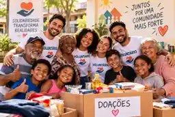
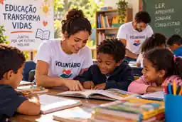
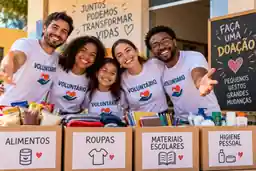

Inclusão e capacitação

Oficinas e encontros que estimulam o desenvolvimento de habilidades e a autonomia dos participantes.
Nosso impacto
Conheça algumas das frentes de atuação da ONG e descubra como participar.

Oficinas e encontros que estimulam o desenvolvimento de habilidades e a autonomia dos participantes.

Ações de arrecadação e distribuição de itens essenciais em parceria com lideranças locais.

Atividades que aproximam jovens e adultos de conteúdos educativos, orientação profissional e novas possibilidades.
